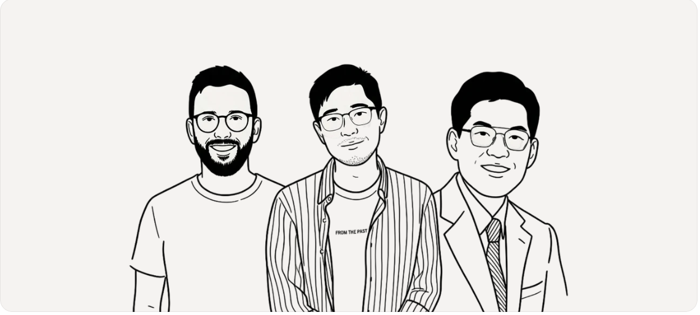
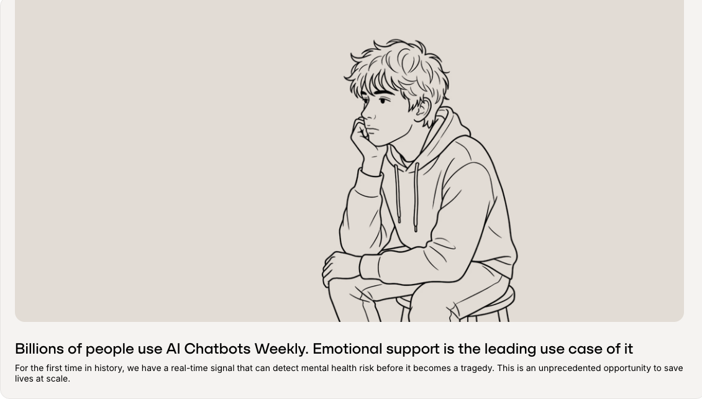
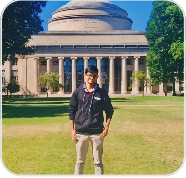

Wondi was born from its founders' personal experience with mental illness and a conviction that early detection can dramatically reduce the severity and escalation of mental health challenges.

Mental health struggles often go unnoticed. On average, it takes 11 years from first symptoms to receiving care (JAMA Psychiatry).

For the first time in history, we have a real-time signal that can detect mental health risk before it becomes a tragedy. This is an unprecedented opportunity to save lives at scale.
We combine complementary deep expertise in ML/AI, clinical psychiatry, and go-to-market
5+ years developing ML/AI models for predicting suicide and personalized mental health treatment plans. The research foundation Wondi is built on is Gun's life's work. Lived experience with depression.
AI / Research LeadSecond-time founder with deep expertise in corporate sales and go-to-market strategy. Motivated by personal experience with anxiety and the conviction that mental health is essential for individuals to thrive and reach their full potential.
Sales & Strategy LeadPsychiatrist with 10+ years clinical practice specialized in high-risk patients and forensic psychiatry. Medical Director at McLean Hospital and Harvard faculty. Brings the clinical backbone that makes Wondi evidence-based, not just data-driven.
Clinical Lead
Wondi's detection engine is built on Gun Ahn's doctoral research at MIT, conducted under Professor John Gabrieli — one of the world's leading neuroscientists. The original model predicted suicidal risk from clinical and longitudinal outcome data across thousands of subjects.
The foundation is now expanding beyond suicide into self-harm and broader mental health risks — adapted for the real-world environment where millions of people are already talking: AI conversation platforms.
In our latest validation using Reddit posting data labeled by three independent clinicians, our model using Claude Opus feature extraction plus SVM classification achieved 99.33% accuracy in distinguishing safe from at-risk conversations.
We're building the safety infrastructure that makes the AI economy worthy of the trust people place in it.